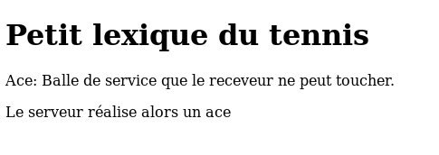
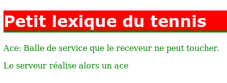
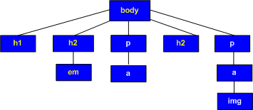

CSS 3 - Notions de base
Introduction
Jusque maintenant, vous avez appris à STRUCTURER vos pages
Web en introduisant des balises correspondant à un élément dans
votre texte (un paragraphe, une image) et en les sauvegardant sous
forme de fichier HTML. Vous allez maintenant apprendre à METTRE
EN PAGE vos pages html c'est-à-dire à définir un style de
présentation pour les éléments de la page en utilisant des couleurs,
un type ou une taille de caractères, etc.
Vous allez réaliser cette opération à l'aide des CSS.
- CSS
-
Les CSS (Cascading Style Sheet) permettent de définir la
présentation de pages Web indépendamment de leur structure et de
leur contenu (rôle du HTML). Cette séparation présente une série
d'avantages.
- La structure du document et la présentation peuvent être
gérées dans des fichiers séparés. Dans un premier temps, on
définit le contenu de la page Web; ensuite, on en définit la
présentation .
- Dans le cas d'un site Web, la présentation est
uniformisée : les documents (pages HTML) font référence aux mêmes
feuilles de styles et auront donc tous le même "look". Ceci
permet beaucoup de souplesse lors d'une modification de la
présentation.
- Cette technique permet la cascade des styles. La «
cascade » est la combinaison de différentes CSS appliquées à un
même document.
Comme pour le HTML, vous utiliserez l'éditeur Notepad ++ pour
définir vos CSS.
Donner un style à un élément
Avant d'aborder les détails techniques de la conception d'une
feuille de style, observez tout d'abord l'exemple très simple qui
suit :
| Le code de la page HTML : |
L'affichage par le navigateur : |
<body>
<h1> Petit lexique du tennis</h1>
<p>Ace: Balle de service que le receveur ne peut toucher.
Le serveur réalise alors un ace </p>
<p>Amortie (ou amorti, anglais: drop shot): Coup consistant
à placer la balle tout près du filet en la faisant rebondir
un minimum </p>
</body>
|
 |
| Les CSS associées à la page : |
L'affichage par le navigateur avec les CSS : |
body {
color : green;
}
h1 {
color: white;
font-family: verdana, sans-serif;
border-bottom: 4px solid green;
background-color : red;
}
|
 |
Syntaxe :
En CSS, l'élément HTML dont on veut définir le style est désigné
sans mettre des < > autour de son
nom. Il s'appelle le
sélecteur, h1 en est un dans notre
exemple.
Le sélecteur est suivi d'une accolade ouvrante et puis de la liste
des propriétés. Chaque propriété a un nom,
color par exemple suivi de : et de la valeur que l'on veut donner à cette
propriété, white pour h1
dans notre exemple. La valeur est suivie d'un ;.
La description du sélecteur se termine par }.
Le bloc sélecteur suivi de ses propriétés forme une règle CSS. Cette
CSS met en forme sauf spécification contraire tous les éléments h1 en les écrivant en blanc.
Les exemples qui suivent vont respecter une certaine
indentation qui nous semble la plus claire pour le lecteur : nom du
sélecteur sur la première ligne, liste des propriétés à raison d'une
par ligne et pour terminer l'accolade fermante. Dans la réalité,
l'écriture est tout à fait libre et notre exemple pourrait être
écrit sur une seule ligne.
L'ordre dans lequel apparaissent les règles CSS n'a aucune
importance mais le bon usage veut que vous commenciez par la règle
la plus générale càd la règle body correspondant à la balise <body> en HTML.
L'ordre dans lequel apparaissent les propriétés d'un sélecteur
n'a également aucune importance et il n'existe pas de recommandation
à ce sujet.
Comment insérer les CSS dans le HTML ?
Première solution: (à l'intérieur d'une balise)
Cette solution n'est pas conseillée et est même en
contradiction avec le principe d'indépendance entre structure et
mise en page de la page Web. En effet, la description du style peut
se faire individuellement, pour un mot ou paragraphe de page par
exemple et ce dans le fichier HTML.
Ceci revient en fait à se passer de CSS.
<p style = "font-size: 16pt ;"
>
définirait une taille de caractères pour le paragraphe qui suit. On
aura jamais recours à cette solution dans le cadre de ce cours.
Deuxième solution: (dans le fichier html)
Les CSS sont incorporées dans le fichier html. On rajoute une balise
<style type="text/css"> dans la
section <head> de la page html et on
introduit ensuite la liste des éléments et leurs propriétés. Cette
énumération se termine en introduisant la balise de fin de style </style>.
Exemple:
<head>
<title>Le titre de ma page html </title>
<style type = "text/css">
h1 {
color : maroon;
font-family : sans-serif;
border-bottom : 1px solid black;
}
p {
color : black;
}
</style>
</head>
Les règles CSS sont alors exclusivement applicables à la page
HTML en question.
Troisième solution: (dans un fichier séparé)
- Les règles CSS sont incluses dans un fichier séparé dont
l'extension sera .css; par exemple style.css. Ce fichier
est une feuille de style externe. Attention il ne faut
surtout pas inclure dans le fichier .css la balise <style> qui est du HTML.
- On ajoute à la page HTML un élément qui permet de faire le
lien entre la page et son style qui a été enregistré dans le
fichier d'extension .css
<link type = "text/css" rel = "stylesheet" href = "style.css">
L'attribut href fait le lien avec le
fichier CSS externe (voir à ce sujet le cours sur les différents
adressages). rel indique au navigateur que le fichier lié est une
feuille de style. type indique à ce même navigateur que le contenu
du fichier lié est de type CSS.
Cette troisième solution permet de n'avoir qu'une seule feuille de
style pour plusieurs pages html. Vous comprenez maintenant pourquoi
un des avantages des CSS est d'unifier le style des pages d'un site
Web et de faciliter les mises à jour de ce style. En effet, les
modifications ne sont effectuées qu'une fois, dans le fichier CSS
qui porte sur toutes les pages html qui y font référence grâce à
l'instruction link dans la section head
des fichiers html correspondants.
Remarquez qu'il est également possible de lier une seule feuille
HTML à plusieurs feuilles de style CSS. Il y aura alors plusieurs
éléments link ou style
dans la feuille HTML (pour rappel, c'est pour cela que ces feuilles
de style s'appellent des "cascades").
 Cette
troisième solution est une recommandation du W3C. C'est pourquoi
nous vous demandons de l'utiliser !
Cette
troisième solution est une recommandation du W3C. C'est pourquoi
nous vous demandons de l'utiliser !
Validation du CSS
Tout comme pour le code HTML5, le code CSS3 peut être validé via un
validateur créé par le W3C. Vous trouverez ce validateur à cet
endroit :
http://jigsaw.w3.org/css-validator/
Les sélecteurs
Nous avons vu qu'une déclaration CSS se compose d' un
sélecteur. Celui-ci permet de sélectionner un ou plusieurs éléments
HTML dans le but de leur donner du style. Nous allons voir ici les
différents sélecteurs possibles les plus courants. A vous par la suite de choisir
celui qui est le plus approprié à chaque cas qui se présente.
La sélection simple
Pour sélectionner tous les paragraphes d'une page HTML, le
sélecteur prend la forme de l'élément HTML sans les balises < et
>. Voici ci-dessous comment appliquer une couleur verte ainsi
qu'une police particulière à tous les paragraphes d'une page HTML.
p {
color : green;
font-family : sans-serif;
}
On peut regrouper différents éléments ensemble pour leur
appliquer un même style. Exemple :
article,p,h3 {
color : green;
font-family : sans-serif;
}
Il est également possible de sélectionner tous les éléments à l'intérieur d'un autre élément via
la notation :
div p {
color : green;
font-family : sans-serif;
}
On sélectionne dans l'exemple tous les paragraphes contenus dans un <div> et uniquement ceux-là !.
Les classes et les ids peuvent bien évidemment être utilisés dans cette notation.
La sélection universelle
Le sélecteur universel * permet de sélectionner tous les
éléments HTML d'une page et de leur affecter un style. Celui-ci est
souvent utiliser afin d'initialiser tous les éléments HTML à une
valeur par défaut qui pourra ensuite être modifiée (voir outrepasser
l'héritage ci-dessous). Dans l'exemple ci-dessous, nous définissons
les marges de tous les éléments HTML à 0.
* {
margin:0;
}
Les classes
- Dans l'exemple de la sélection simple, tous les paragraphes
et leurs "descendants" seront écrits en vert. Il est possible de
donner un style différent à un seul des paragraphes, à un
des titres h1, h2,
h3 de la page à l'aide d'une classe. La
classe permet de sélectionner individuellement ce paragraphe ou ce
titre.
On peut vouloir utiliser le style défini dans une classe à
différents éléments de la page HTML.
Certains titres de niveau h1 peuvent
également se voir appliquer les propriétés de la classe
premiereclasse :
Dans la page HTML, on va associer le ou les titre(s) h1 en question ainsi que certains
paragraphes sélectionnés à la classe:
<h1 class = "premiereclasse">
Dans le code CSS, un sélecteur de classe est
rajouté :
p.premiereclasse, h1.premiereclasse {
color : black ;
}
Pour pouvoir styler n'importe quel élément avec les
propriétés de la classe premiereclasse, il suffit de définir la
classe dans le fichier css sans l'associer à un élément. Le nom de
la classe s'écrit avec un point suivi du nom de la classe :
.premiereclasse {
color : black ;
}
Un élément HTML peut appartenir à plusieurs classes. <p class = "premiereclasse
deuxiemeclasse">
Les styles des 2 classes seront alors appliqués à l'élément
en question.
Il pourrait y avoir plusieurs sélecteurs portant sur une
propriété donnée pour un même élément. Quelle est la propriété qui
sera alors appliquée ? Celle de la dernière classe de la liste.
Dans l'exemple ci-dessus, les classes premiereclasse et
deuxiemeclasse peuvent toutes deux déterminer une couleur de
caractères différentes. Dans ce cas, c'est la dernière dans le
fichier CSS qui sera utilisée.
Les ids
Chaque élément HTML peut avoir un attribut id qui doit être
unique dans une page donnée. Nous pouvons dans notre
feuille de style CSS appliquer un style uniquement à cet élément
dont nous connaissons l'id. Voici un exemple :
<p id="monSuperParagraphe">
super ce paragraphe ! </p>
#monSuperParagraphe {
color : red;
font-family : sans-serif;
}
Dans le code HTML nous définissons un id sur un paragraphe
bien déterminé. Ensuite dans la feuille CSS, nous pouvons accéder à
ce paragraphe et lui appliquer un style grâce au caractère #.
Autres sélections
Il est possible également de sélectionner des éléments HTML par
leurs attributs, par la valeur d'un attribut, par parent-enfant
directs mais nous n'avons généralement pas besoin de ces sélecteurs
pour un site Web simple. Nous vous renvoyons vers la documentation
du W3C à ce sujet pour ceux que cela intéresse : Sélecteurs
W3C
Cascade et Héritage
Cascade
CSS est l'abréviation de Cascading Style Sheet. Il y a donc une notion de cascading mais qu'est-ce que cela peut bien vouloir dire ?
En fait lorsqu'une page HTML est affichée, les sources CSS peuvent être multiples. Il y a bien sûr la feuille de style définie par l'auteur(vous) mais à celle-ci
s'ajoute la feuille de style du navigateur et même celle de l'utilisateur(rarement utilisé). Les règles CSS présentes dans ces feuilles de styles vont donc potentiellement entrer en conflit.
Que faire dans le cas où 2 règles peuvent s'appliquer sur une même propriété ? Et bien le "cassading" répond à cette question en instaurant un système de priorité. Il est donc important de bien connaître
cette notion afin de "debugger" efficacement son code CSS.
Plusieurs feuilles de styles
Comme mentionné au paragraphe précédent, il existe différentes feuilles de styles s'appliquant à votre site même si vous n'en définissez qu'une seule.
La première feuille de style à s'appliquer est la feuille de style du navigateur. Si vous ne définissez aucune feuille de style pour votre page html, celle-ci s'affichera néanmoins avec un style par défaut (la feuille de style du navigateur). Ceci explique également en partie pourquoi le rendu peut différer d'un navigateur à l'autre, leurs feuilles de styles respectives étant quelque peu différentes.
La deuxième feuille de style à s'appliquer est celle de l'auteur (concepteur du site web). Il s'agit de la feuille de style que vous créérez le plus souvent.
La troisième feuille de style à s'appliquer est celle de l'utilisateur. Elle permet à l'utilisateur(surfeur) de définir sa propre feuille de style et donc d'adapter les sites Web
à sa convenance. Malheureusement la procédure pour appliquer cette feuille de style diffère d'un navigateur à l'autre, c'est pourquoi elle est rarement utilisée.
Règles spécifiques
Plus une règle est complexe, plus elle sera spécifique et donc plus elle sera prioritaire. Voyons comment ce calcul de spécificité est réalisé. Pour chaque règle CSS, le sélecteur est analysé et un nombre de 4 chiffres lui est attribué. Le premier chiffre indique si le sélecteur est utilisé localement (via un attribut style dans le code HTML) ou non. Ce premier
chiffre devrait donc toujours valoir 0 si on respecte les recommandations du W3C. Attention un style local est prioritaire sur les autres styles !
Le deuxième chiffre indique le nombre d'IDs présents dans le sélecteur.
Le troisième chiffre indique le nombre de classes ou pseudo-classes présentes dans le sélecteur.
Le quatrième chiffre indique le nombre d'éléments HTML présents dans le sélecteur.
Au plus ce nombre est élevé, au plus la règle est spécifique et donc prioritaire.
Exemple dans une feuille de style externe :
p 0,0,0,1
p.myclass 0,0,1,1
#myid p.myclass 0,1,1,1
L'ordre de priorité établi par le "cascading" est le suivant :
- Type de media : une règle ne s'applique que pour le media visé (une règle pour le media print ne s'applique pas pour le media screen)
- Origine de la feuille de style : utilisateur -> auteur -> navigateur. Une feuille de style utilisateur aura donc toujours la priorité sur une feuille de style auteur !
- Poids de la règle : la déclaration !important permet d'octroyer plus de poids à une règle en cas de conflit
- Spécificité : plus une règle est spécifique (voir ci-dessus), plus elle est prioritaire
- Ordre d'apparition
Héritage
Certains éléments sont parfois imbriqués dans un autre
élément. Ils vont alors hériter des propriétés de cet élément. On
dit que les éléments enfants héritent du style de leurs parents.
Exemple de fichier .css
body {
color : yellow ;
background-color : blue ;
}
p {
color : white ;
}

Quand une propriété est définie au niveau de l'élément <body>, tous les éléments enfants de <body> en héritent si celle-ci s'y prête
(sauf contre-ordre). Cet héritage s'étend à tous les niveaux. Si une
couleur de fond (background-color) est
donnée au niveau de <body>, tous les
éléments de la feuille concernée ainsi que leurs enfants seront
affectés. Dans notre exemple, toute la page aura un fond bleu.
Remarquez que certaines propriétés ne s'appliquent pas à tous les
éléments. Par exemple, la couleur de fond ne s'applique pas à la
balise <img>. D'autres propriétés (souvent liées à la mise en page)
ne sont tout simplement pas héritées (margin, padding, border, width, height, ...).
Les propriétés liées à la mise en page (margin, padding, height, width, border, ...) ne sont pas héritées !
Les propriétés de couleur ou liées à la police de caractère sont héritées !
Outrepasser l'héritage
On peut vouloir qu'une des propriétés du parent ne soit pas
applicable à un des enfants. La couleur des caractères de ma page
peut être jaune (propriété définie à l'aide du sélecteur body) et on peut vouloir qu'un élément ait des
caractères d'une autre couleur ; les caractères de l'élément p seront blancs dans notre exemple. On
outrepasse l'héritage en introduisant une règle spécifique pour p. L'élément paragraphe hérite la couleur de
fond de body mais la couleur des
caractères d'un paragraphe est différente.
p { /* permettre que les paragraphes soient écrits en blanc*/
color : white ;
}
En CSS3, une déclaration d'importance a été introduite, il s'agit de !important.
Vous pouvez ajouter à une propriété cette déclaration d'importance,
c'est alors celle-ci qui prendra le dessus en cas de conflit.
* { color:black !important; }
p { color : white }; /* les paragraphes seront en noir malgré cette déclaration spécifique */
Vous l'aurez sans doute remarqué. Savoir définir des styles est une chose, être sûr du résultat final en est une autre.
Certains éléments seront hérités, d'autres pas (margin, padding, border, height, ...) . Le cascading aura également son effet.
Il est donc utile d'avoir un outil (debugging) qui nous montre quelles règles sont appliquées dans un cas bien précis.
Une bonne pratique est de commenter vos sources. Pour introduire des
commentaires dans les CSS, il suffit d'encadrer vos remarques par /* et */.
/* Ceci est un tout petit commentaire ...*/